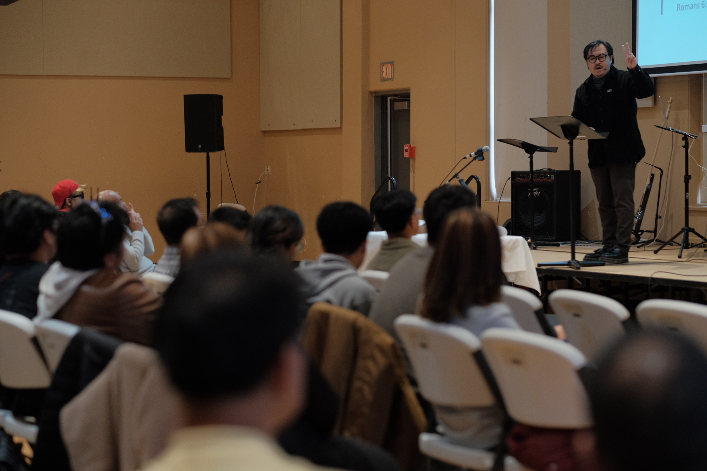

Worship & the Word
We gather around Scripture, prayer, and worship, with Jesus at the center.
Exploring faith or looking for a church home? We would love to welcome you to Faith Life.
Find us
Winnipeg, Manitoba R2V 3A7
Join us on Sundays at 1:30 PM. If you have questions before your visit, our team would love to help.
A local church family learning to follow Jesus together.
We gather around Scripture, prayer, and worship, with Jesus at the center.
There is room for conversation and connection. Introduce yourself and let us know it is your first visit.
Explore a Bible study, join a gathering, or keep asking questions about the Christian faith.
Our Sunday service begins at 1:30 PM, Winnipeg time.
Come in clothing you feel comfortable in. You are welcome to join us as you are.
Children’s Sunday School is part of our ministry. Contact the team for current age groups and arrangements.
Yes. You are welcome to listen, ask honest questions, and get to know the community.
Explore the Ministries page or talk with our team about a Bible study or fellowship group.
Send a question or let our team know you are planning a visit.